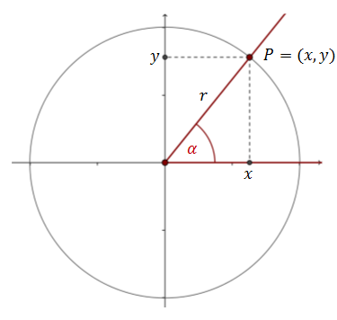
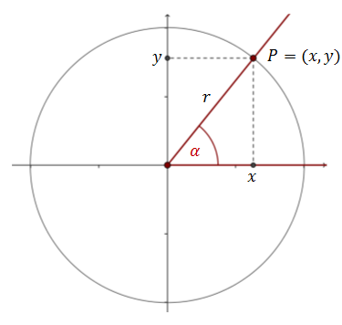
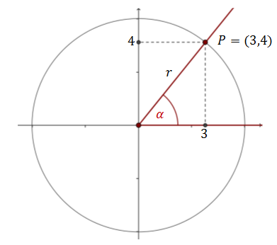
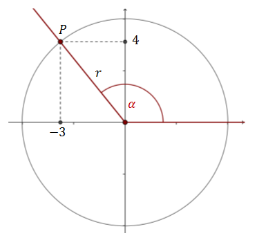
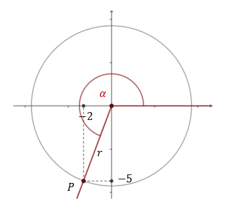

Funkcje trygonometryczne dowolnego kąta
Umiemy już definiować funkcje trygonometryczne w trójkącie prostokątnym (dla kątów
ostrych). Teraz zobaczymy jak można uogólnić tę definicję dla dowolnego kąta.
Narysujmy w układzie współrzędnych dowolny okrąg o promieniu \(r\) i zaznaczmy w
nim kąt środkowy \(\alpha \).
Ramię kąta \(\alpha \) wyznacza na okręgu punkt \(P=(x,y)\). 
Ramię kąta \(\alpha \) wyznacza na okręgu punkt \(P=(x,y)\). 
Teraz możemy podać ogóle definicje funkcji trygonometrycznych:
\[\begin{split}&\sin{\alpha }=\frac{y}{r}\qquad \qquad &\cos{\alpha
}=\frac{x}{r}\\[10pt]&\text{tg}{\alpha }=\frac{y}{x}\qquad \qquad &\text{ctg}{\alpha
}=\frac{x}{y}\end{split}\]
Słownie powyższe definicje można zapisać tak:
Sinusem kąta \(\alpha \) nazywamy stosunek rzędnej punktu \(P\) do odległości tego punktu
od początku układu współrzędnych. \[\sin \alpha =\frac{y}{r}\]
Cosinusem kąta \(\alpha \) nazywamy stosunek odciętej punktu \(P\)
do odległości tego punktu od początku układu współrzędnych. \[\cos \alpha =\frac{x}{r}\]
Tangensem kąta \(\alpha \) nazywamy stosunek rzędnej punktu \(P\)
do odciętej tego punktu (pod warunkiem, że odcięta jest różna od zera). \[\operatorname{tg}
\alpha =\frac{y}{x}\]
Cotangensem kąta \(\alpha \) nazywamy stosunek odciętej punktu
\(P\) do rzędnej tego punktu (pod warunkiem, że rzędna jest różna od zera). \[\operatorname{ctg}
\alpha =\frac{x}{y}\]
Załóżmy, że na ramieniu kąta \(\alpha \) możemy zaznaczyć punkt \(P=(3,4)\). Jakie
będą wówczas wartości funkcji trygonometrycznych tego kąta?
Wykonujemy rysunek do
zadania:  Obliczamy długość
promienia okręgu: \[\begin{split}r^2&=3^2+4^2\\r^2&=9+16\\r^2&=25\\r&=5\end{split}\] Obliczamy
wartości funkcji trygonometrycznych: \[\begin{split}&\sin{\alpha }=\frac{4}{5}\qquad \qquad
&\cos{\alpha }=\frac{3}{5}\\[10pt]&\text{tg}{\alpha }=\frac{4}{3}\qquad \qquad
&\text{ctg}{\alpha }=\frac{3}{4}\end{split}\]
Załóżmy, że na ramieniu kąta \(\alpha \) możemy zaznaczyć punkt \(P=(-3,4)\). Jakie
będą wówczas wartości funkcji trygonometrycznych tego kąta?
Wykonujemy rysunek do
zadania:  Obliczamy długość
promienia okręgu: \[\begin{split}r^2&=(-3)^2+4^2\\r^2&=9+16\\r^2&=25\\r&=5\end{split}\]
Obliczamy wartości funkcji trygonometrycznych: \[\begin{split}&\sin{\alpha
}=\frac{4}{5}\\[10pt]&\cos{\alpha }=\frac{-3}{5}=-\frac{3}{5}\\[10pt]&\text{tg}{\alpha
}=\frac{4}{-3}=-\frac{4}{3}\\[10pt]&\text{ctg}{\alpha }=\frac{-3}{4}=-\frac{3}{4}\end{split}\]
Załóżmy, że na ramieniu kąta \(\alpha \) możemy zaznaczyć punkt \(P=(-2,-5)\).
Jakie będą wówczas wartości funkcji trygonometrycznych tego kąta?
Wykonujemy
rysunek do zadania:  Obliczamy
długość promienia okręgu:
\[\begin{split}r^2&=(-2)^2+(-5)^2\\r^2&=4+25\\r^2&=29\\r&=\sqrt{29}\end{split}\] Obliczamy
wartości funkcji trygonometrycznych: \[\begin{split}&\sin{\alpha
}=\frac{-5}{\sqrt{29}}=-\frac{5}{\sqrt{29}}\\[10pt]&\cos{\alpha
}=\frac{-2}{\sqrt{29}}=-\frac{2}{\sqrt{29}}\\[10pt]&\text{tg}{\alpha
}=\frac{-5}{-2}=\frac{5}{2}\\[10pt]&\text{ctg}{\alpha }=\frac{-2}{-5}=\frac{2}{5}\end{split}\]
Załóżmy, że na ramieniu kąta \(\alpha \) możemy zaznaczyć punkt \(P=(4,-2)\). Jakie
będą wówczas wartości funkcji trygonometrycznych tego kąta?
Wykonujemy rysunek do
zadania:  Obliczamy długość
promienia okręgu:
\[\begin{split}r^2&=4^2+(-2)^2\\r^2&=16+4\\r^2&=20\\r&=\sqrt{20}=2\sqrt{5}\end{split}\]
Obliczamy wartości funkcji trygonometrycznych: \[\begin{split}&\sin{\alpha
}=\frac{-2}{2\sqrt{5}}=-\frac{1}{\sqrt{5}}\\[10pt]&\cos{\alpha
}=\frac{4}{2\sqrt{5}}=\frac{2}{\sqrt{5}}\\[10pt]&\text{tg}{\alpha
}=\frac{-2}{4}=-\frac{1}{2}\\[10pt]&\text{ctg}{\alpha }=\frac{4}{-2}=-2\end{split}\]
Obliczamy długość
promienia okręgu:
\[\begin{split}r^2&=4^2+(-2)^2\\r^2&=16+4\\r^2&=20\\r&=\sqrt{20}=2\sqrt{5}\end{split}\]
Obliczamy wartości funkcji trygonometrycznych: \[\begin{split}&\sin{\alpha
}=\frac{-2}{2\sqrt{5}}=-\frac{1}{\sqrt{5}}\\[10pt]&\cos{\alpha
}=\frac{4}{2\sqrt{5}}=\frac{2}{\sqrt{5}}\\[10pt]&\text{tg}{\alpha
}=\frac{-2}{4}=-\frac{1}{2}\\[10pt]&\text{ctg}{\alpha }=\frac{4}{-2}=-2\end{split}\]
Obliczamy długość
promienia okręgu:
\[\begin{split}r^2&=4^2+(-2)^2\\r^2&=16+4\\r^2&=20\\r&=\sqrt{20}=2\sqrt{5}\end{split}\]
Obliczamy wartości funkcji trygonometrycznych: \[\begin{split}&\sin{\alpha
}=\frac{-2}{2\sqrt{5}}=-\frac{1}{\sqrt{5}}\\[10pt]&\cos{\alpha
}=\frac{4}{2\sqrt{5}}=\frac{2}{\sqrt{5}}\\[10pt]&\text{tg}{\alpha
}=\frac{-2}{4}=-\frac{1}{2}\\[10pt]&\text{ctg}{\alpha }=\frac{4}{-2}=-2\end{split}\] Jak widać na powyższych przykładach funkcje trygonometryczne mogą przyjmować
również wartości ujemne.
W zależności od ćwiartki układu współrzędnych można przypisać każdej funkcji trygonometrycznej konkretny znak.
W zależności od ćwiartki układu współrzędnych można przypisać każdej funkcji trygonometrycznej konkretny znak.
W
pierwszej ćwiartce wszystkie są dodatnie,
w drugiej tylko sinus,
w trzeciej tangens i cotanges,
a w czwartej cosinus.
w drugiej tylko sinus,
w trzeciej tangens i cotanges,
a w czwartej cosinus.
Pamiętając powyższy wierszyk od razu możemy ustalić znak dowolnej funkcji
trygonometrycznej. Przykładowo:
W kolejnym rozdziale zobaczymy jak można sprytnie obliczać wartości funkcji trygonometrycznych
dla kątów rozwartych.
- \(\sin 150^\circ \) jest dodatni, ponieważ kąt \(150^\circ \) leży w drugiej ćwiartce.
- wartości funkcji \(\cos 150^\circ \text{, }\operatorname{tg} 150^\circ \text{, }\operatorname{ctg} 150^\circ \) są ujemne, ponieważ kąt \(150^\circ \) leży w drugiej ćwiartce.
- \(\operatorname{tg} 214^\circ \) jest dodatni, ponieważ kąt \(214^\circ \) leży w trzeciej ćwiartce.
- \(\operatorname{ctg} 300^\circ \) jest ujemny, ponieważ kąt \(300^\circ \) leży w czwartej ćwiartce.